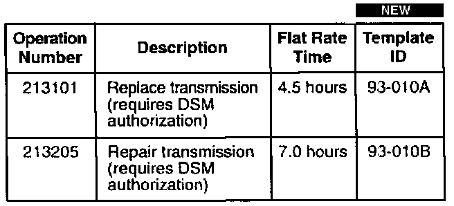
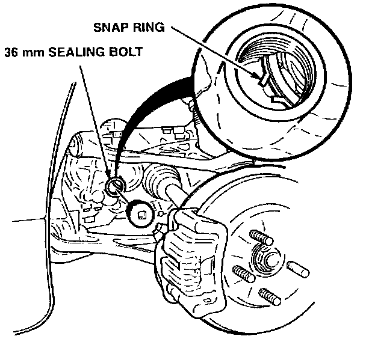

M/T - Broken Countershaft Snap Ring.
April 22, 1997BULLETIN NO.
93-010
YEAR
1991-92
MODEL
NSX
VIN APPLICATION
See VEHICLES AFFECTED
Broken Countershaft Bearing Snap Ring
(Supersedes 93-010, dated May 4, 1993)
SYMPTOM
The transmission pops out of gear, or you hear a grinding/growling noise on deceleration or acceleration.
PROBABLE CAUSE
The snap ring holding the countershaft bearing in the transmission housing is broken.
VEHICLES AFFECTED
All with 5-speed manual transmissions between the following transmission numbers:
J4A4-1003542 to J4A4-1005978
CORRECTIVE ACTION
[NEW]
Inspect the countershaft bearing snap ring. If it is broken, replace the transmission. If it is not broken, repair the transmission (see PARTS INFORMATION).
PARTS INFORMATION
Replacement
Transmission Assembly: P/N 20011-PR8-A00
Repair
Axle Seal: P/N 91207-PR8-005
Differential Taper Bearing: P/N 91122-PR8-008 [NEW]
Transmission Housing: P/N 21200-PR8-000
Snap Ring: P/N 90602-PR8-000
Shift Lever Seal: P/N 91215-PR8-005 [NEW]
75 mm Thrust Shim: *P/N 41490-PR8-000
* Standard shim listed - to measure the bearing preload, see Page 15-12 of the Service Manual.
WARRANTY CLAIM INFORMATION
In warranty:
The normal warranty applies.

Failed P/N: 21200-PR8-000
Defect code: 042
Contention code: B07
Out of warranty:
Any repair performed after warranty expiration may be eligible for goodwill consideration by the District Technical Manager or your Zone Office. You must request consideration, and get a decision, before starting work.
REPAIR PROCEDURE
1. Remove the rear tire on the driver's side.

2. Referring to Page 13-12 of the Service Manual, remove the 36 mm sealing bolt in the end of the transmission housing, and inspect the snap ring.
[NEW]
^ If the snap ring is broken, obtain DSM authorization to replace the transmission. Do not disassemble the transmission. (Be sure to disconnect both lower control arms at the subframe, not at the ball joint.)
^ If the snap ring is not broken, inspect the transmission, and repair as necessary. In addition to any other needed repair, replace the transmission housing, the differential taper bearing, the 75 mm thrust shim, and the snap ring. Reset the differential bearing preload as described on Page 15-12 of the Service Manual.
NOTE:
The machining marks on the differential carrier are not the result of contact by the reverse gear.
3. Reinstall the transmission.
4. Reinstall the rear wheels and torque the wheel nuts to 110 N.m (11 kg-m. 80 lb ft).